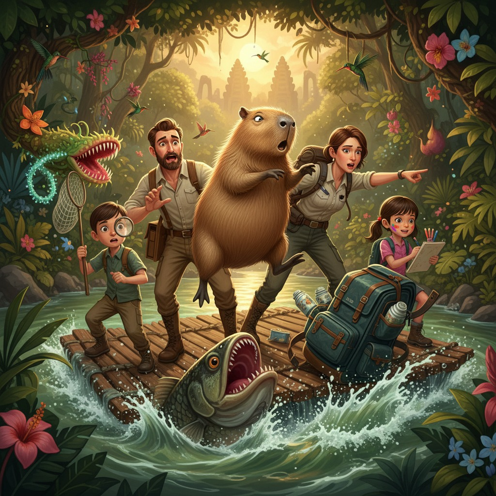

Агафон Светотенин стоял на плоту с видом человека, который только что обнаружил в любимом чайнике трещину. То есть с видом абсолютной катастрофы, тщательно упакованной в невозмутимость.
— Дзен, — произнёс он тихо и торжественно, глядя на капибару, — мы поговорим об этом позже.
Капибара сидела посередине плота с мокрой мордой и выражением существа, которое вообще-то ни при чём. Рюкзак Агаты — объёмный, защитного цвета, набитый всем, что только можно представить, — уже скрылся за поворотом реки, весело покачиваясь на бурунах, словно прощаясь ручкой.
— Мой «Горный Феникс»! — выдохнул Агафон, провожая рюкзак взглядом. — Там было двести граммов «Горного Феникса», Агата. Двести граммов!
— Там был мой прототип рюкзака с функцией автономной зарядки, — отозвалась Агата, стоя на краю плота с шестом в руке и уже оценивая берег на предмет выхода. — Три года разработки. И спутниковый телефон.
— И мой гербарий с образцами, которые я собрал утром, — добавил Гектор, поправляя лупу на лбу.
— А там были мои маркеры, — сказала Мира и немного подумала. — Голубой, бирюзовый и цвет «тропический закат». Их нельзя купить нигде, кроме одного магазина в Токио.
Все посмотрели на Дзен.
Дзен зевнула. Зевок у капибары был масштабным, как восход солнца.
---
Берег встретил их влажной духотой, многоголосием птиц и полным отсутствием каких-либо признаков цивилизации. Агата выпрыгнула первой, оценила почву, проверила направление ветра и достала из кармана брюк небольшой компас — единственный прибор, который оказался не в рюкзаке, а при ней.
— Отлично, — сказала она тоном человека, которому только что сообщили об интересном квесте. — У нас есть компас, нож, верёвка на поясе, аптечка в боковом кармане куртки и... — она сделала паузу, проводя инвентаризацию, — Агафон, что у тебя в карманах?
Агафон порылся в карманах льняных брюк и извлёк: складной нож для вскрытия чайных упаковок, маленький термос с улун ом, который он успел заварить ещё на базе, блокнот с описаниями вкусовых букетов и огрызок карандаша.
— Термос, — сказала Агата уважительно. — Это важнее, чем кажется.
— Я знаю, — ответил Агафон с достоинством.
Гектор выложил из накладных карманов: лупу, бинокль, пинцет, три пустых пробирки и маленький полевой определитель растений Юго-Восточной Азии в мягкой обложке.
— Гектор, — сказала Агата, — ты мой любимый сын.
— Я твой единственный сын, — уточнил Гектор.
— Именно поэтому.
Мира вывернула карманы и показала: два маркера — красный и чёрный, — моток тонкой верёвки, который она использовала для натягивания альбомных листов, и горсть каких-то орешков, которые она подобрала утром «потому что красивые».
— Орешки! — Агата взяла их с видом опытного выживальщика. — Гектор, что это?
Гектор склонился над орешками с лупой.
— *Canarium ovatum*. Питательные. Мы их можем есть.
— Превосходно.
Дзен тем временем уже деловито жевала прибрежную растительность, полностью восстановившись после инцидента с рыбой. Мир вокруг неё был сложен и непонятен, но трава была вполне съедобной.
---
Следующие два часа семья Светотениных двигалась вдоль реки вверх по течению — Агата вела, ориентируясь по компасу и солнцу, Гектор шёл замыкающим и периодически останавливался так резко, что Дзен на него натыкалась.
— Мама! — кричал он каждые пятнадцать минут. — Мама, иди сюда! Это *Nepenthes rajah*! Это самая большая кувшинчатая ловушка в мире, она переваривает крыс!
— Замечательно, дорогой, — откликалась Агата, не останавливаясь. — Сфотографируй мысленно, мы идём.
— Но это научное открытие!
— Когда вернёмся домой, напишешь статью.
Агафон шёл рядом с женой и время от времени прикладывал к губам термос с улуном, отчего весь процесс выживания приобретал неожиданно аристократический оттенок.
— Знаешь, — сказал он задумчиво, — я думал об этом. О потере «Горного Феникса». И я пришёл к выводу, что расстраиваться не имеет смысла.
— Рада слышать, — сказала Агата.
— Потому что в этих джунглях растёт чай, которого я ещё не пробовал. И это значит, что передо мной не катастрофа, а возможность.
Агата остановилась и посмотрела на мужа.
— Агафон, — сказала она, — иногда ты бываешь неожиданно мудрым.
— Это чай, — скромно ответил он. — Чай проясняет мысли.
— Папа, — встрял Гектор, — дикий чай здесь называется *Camellia sinensis* и растёт на высоте от восьмисот метров. Мы сейчас на двухстах.
— Значит, нам надо подняться, — сказал Агафон и посмотрел на жену.
Агата уже смотрела на склон.
---
Подъём занял час. Дзен преодолевала его с выражением существа, которое всё понимает, но молчит из вежливости.
На середине склона Мира остановилась и схватила отца за рукав.
— Папа. Смотри.
Перед ними открывалась небольшая долина, залитая послеполуденным светом. Густой зелёный полог внизу, красные вспышки каких-то цветов, серебристая нитка ручья, желтоватые проплешины скал — и всё это в таком сочетании, что у человека с художественным взглядом перехватывало дыхание.
— Это, — сказала Мира торжественно, — называется «взрыв».
— Пейзаж? — уточнил отец.
— Нет. Цвет. Когда цвета взрываются вместе — это «взрыв». Я так называю. Мне нужно это нарисовать.
Она немедленно достала красный маркер, вырвала страницу из записной книжки Агафона — тот не успел возразить — и начала рисовать. Прямо стоя. Не обращая внимания на то, что слева от неё Гектор обнаружил какое-то невероятное насекомое, справа мама изучала почву, а капибара меланхолично стояла рядом и служила мольбертом.
— Дзен, не двигайся, — сказала Мира.
Дзен не двигалась. Это было её главным жизненным принципом.
---
На вершине холма, среди редких деревьев, Агафон вдруг замер.
Он замер так, как замирают только дегустаторы чая и опытные охотники — полностью, без лишних движений, с лицом человека, поймавшего что-то важное в воздухе.
— Агата, — сказал он тихо. — Ты чувствуешь?
— Влажность около семидесяти процентов, ветер северо-восточный, — машинально ответила она.
— Нет. Запах.
Агата принюхалась. Действительно — сквозь обычные джунглевые ароматы что-то пробивалось. Тонкое, чуть дымное, с цветочными нотами.
— Это дым от костра, — сказала она. — Люди.
— Это дым от чайного куста, — сказал Агафон. — Там жгут ветки *Camellia*. Значит, рядом чайная плантация. И, вероятно, деревня.
Они переглянулись.
— Ты нашёл нас выход, — сказала Агата.
— Я нашёл нас чай, — поправил Агафон. — Выход — приятный бонус.
---
Деревня оказалась маленькой — несколько десятков домов на деревянных сваях, огороды, куры, и чайные грядки, уходящие вверх по склону аккуратными террасами. Местные жители встретили неожиданных гостей с удивлением, которое быстро сменилось любопытством — особенно когда увидели Дзен.
Капибара произвела фурор.
Дети деревни облепили её со всех сторон, Дзен стояла с видом буддийского монаха и позволяла себя трогать, что немедленно сделало её главной дипломатической фигурой в переговорах.
Пока Агата с помощью жестов, компаса и нескольких слов на малайском объясняла старейшине ситуацию, Агафон сидел с хозяином ближайшего дома и пил чай.
Чай был необыкновенный.
Агафон выпил первую пиалу, прикрыл глаза и долго молчал.
— Что это? — спросил он наконец, показывая на пиалу.
Хозяин сказал название. Агафон попросил повторить. Записал в блокнот.
— Агата, — позвал он не оборачиваясь. — Я только что попробовал чай, которого не существует ни в одном каталоге мира.
— Отлично, — отозвалась Агата из-за угла дома. — Нас отведут к дороге завтра утром. У них есть мотоцикл.
— Мама! — завопил Гектор из зарослей за деревней. — Я нашёл *Nepenthes lowii*! Здесь! В природных условиях! Мама, это в Красной книге!
— Замечательно! Не лезь внутрь!
— Я не лезу, я только смотрю!
Пауза.
— Гектор!
— Я только немножко!
Мира сидела на ступеньках чужого дома и рисовала. Красным и чёрным маркерами, на обороте страницы с описанием вкусового букета редкого чая, она изображала деревню — не реалистично, а так, как видела: красные крыши как взрывы, чёрные тени как молнии, и посередине большая спокойная фигура капибары, вокруг которой суетились маленькие человеческие существа.
Хозяин дома заглянул через плечо и что-то сказал восхищённо.
— Это называется «дзен», — пояснила Мира, показывая на капибару в центре рисунка. — Она всегда в центре. Даже когда всё падает в воду.
Хозяин ничего не понял, но согласно кивнул.
---
На следующее утро семья Светотениных покидала деревню. Старейшина подарил Агафону небольшой пакет с тем самым чаем. Агата получила местную верёвку из лиан — прочнее промышленной — и уже прикидывала, как внедрить технологию в свои разработки. Гектор унёс в голове столько научных открытий, что при ходьбе от них, кажется, даже чуть светилось. Мира держала в руках свой рисунок и была абсолютно счастлива.
Рюкзак, кстати, нашёлся.
Он зацепился за корягу в двух километрах ниже по течению. Местные рыбаки выловили его ещё вчера и, не зная, что с ним делать, поставили сушиться. Прототип рюкзака выжил — Агата не зря делала его водонепроницаемым на совесть. Телефон тоже выжил, потому что лежал в специальном отсеке. «Горный Феникс» промок, но Агафон сказал, что высушенный чай с историей утопления стоит вдвое дороже.
В мотоцикле с коляской, пока они тряслись по лесной дороге в сторону ближайшего посёлка, Агафон держал на коленях найденный рюкзак и пил последние остатки улуна из термоса.
— Знаешь, что я думаю? — сказал он жене.
— Что? — Агата сидела рядом и уже делала заметки о верёвке из лиан.
— Я думаю, что Дзен сделала нам одолжение.
Агата посмотрела на него.
— Мы нашли деревню, которой нет на картах. Чай, которого нет в каталогах. Гектор видел три краснокнижных растения. Мира нарисовала лучшую свою работу. И ты испытала рюкзак в условиях, которые не придумаешь в лаборатории.
— Это называется «катастрофа дала результаты», — медленно сказала Агата.
— Это называется «путешествие», — ответил Агафон.
Дзен ехала в другой коляске, которую приладил добрый водитель, и смотрела на проплывающие мимо джунгли с видом существа, которое всё это давно знало. И про чай. И про рюкзак. И про рыбу.
Особенно про рыбу.
— Дзен, — сказала Мира, — ты сделала это специально?
Дзен моргнула.
Один раз. Медленно.
— Я так и думала, — кивнула Мира и открыла рисунок. — Тогда ты точно в центре.
← Все рассказы